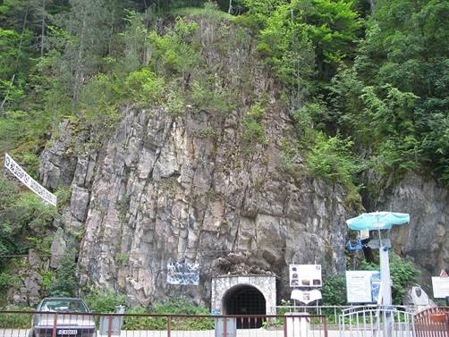
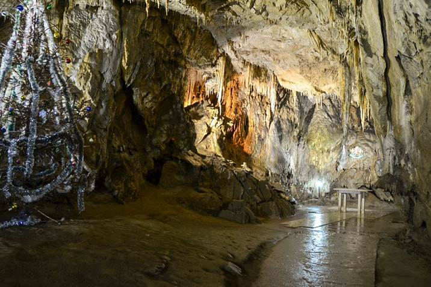
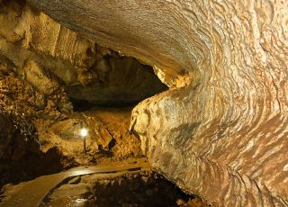
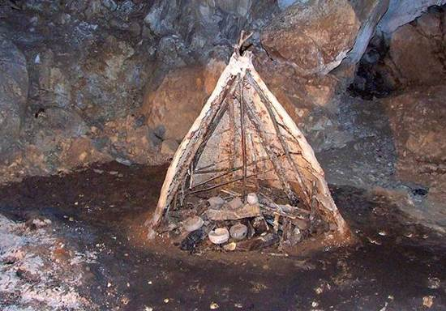
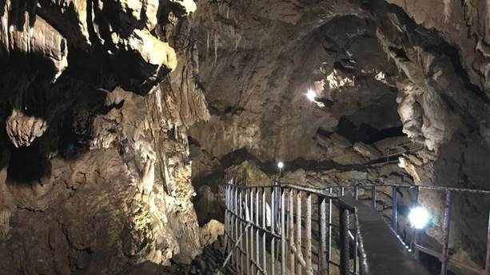

Проучванията на пещерата започват през 1963 от спелеоклуб Чепеларе с ръководител Димитър Райчев,
като първоначално са проучени 8500 метра, а през 1982-1986 се извършва повторно картографиране на пещерата и се откриват нови галерии
и участъци като дължината й достига 10500 метра, а възрастта й е 275000 години. На 4 метра след естествения вход на пещерата е открито
Енеолитно жилище - местен керамичен център, единствено в Европа запазено в естествения си вид. Открити са находки на керамични
съдове, оръдия на труда, овъглено жито, керамична пещ, хромели. Останките датират от каменно-медната епоха. Тази част от пещерата
може да се разгледа за време от 20 минути, с беседа и отделна такса.
|
 |
|  |
Ягодинската пещера е едно от чудесата на България. Част е от неповторимия карстов комплекс
Буйновското ждрело и е само на 3км от село Ягодина в Родопите. Дъхът ви ще спре при вида на уникалните причудливи образувания във
формата на Богородица и Младенеца, Дядо Коледа, Снежанка и седемте джуджета и дори Пижо и Пенда. Те са се формирали в продължение на
милиони години и сега ще ви се разкрият в целия си блясък и величие.
|
Бъдете готови да изживеете една красива зимна приказка! Без значение кой сезон е, в пещерата
действието се развива при 6ºС. Още от прага й пред вас ще се разкрие дълга 1250м пътека, която се извива между ефектно осветеното й
подземно царство. С всяка крачка ще навлизате сякаш в друга вселена, в която може да докоснете с ръка безброй невероятни скални
образувания: пещерни перли, "леопардови кожи”, царевичните сталактити и синтрови езера. Едно от тях е Езерото на късмета, в което
традиционно се хвърлят монети, за да може късметът винаги да е с вас.
|
 |
|  |
В самото начало на пещерата ще посетите впечатляващата Новогодишна зала. В нея има украсена
коледна елха, около която местният пещерен клуб посреща всяка Нова година. Интересно е, че тя се използва и като ритуална зала.
Тук са се състояли над 100 бракосъчетания. Кой знае, може и вие да минете под венчило на това тайнствено и магнетично място!
По средата на пещерата ще се срещнете и със Стената на греха. По традиция, върху нея се лепят монети. Така ще може да проверите
доколко сте праведни.
|
Ако успеете да задържите вашата монета отвесно - значи, че на съвестта ви не тежат грехове.
Истинско адреналиново изживяване ще се окаже скалното катерене със специална екипировка до втория и третия етаж на пещерата.
Тук са открити следи от древни енеолитни жилища (14-13 хил. пр.н.е.). Тях може да разгледате на около 300м от изкуствения изход на
пещерата.Очакват ви безброй емоции! Само трябва да ги грабнете - с едно пътуване до Ягодинската пещера!
|
 |